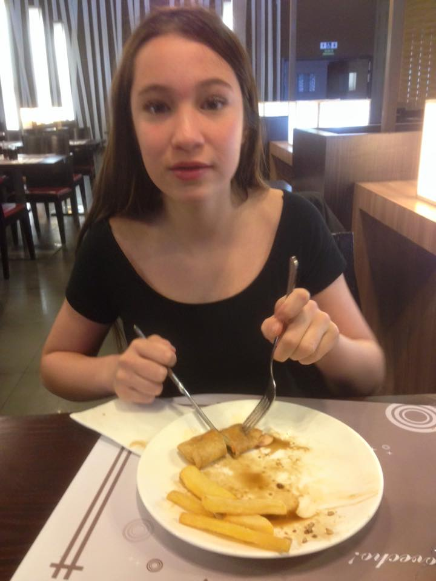

close
Je suis Linh

L'aînée d'une longue lignée. J'ai deux tontons dont un avec neuf années d'écarts seulement. De nature calme et raisonnée, je suis le modèle de ma famille.
J'ai vécu une enfance tumultueuse avec beaucoup de va-et-vient, des arrières-grands-parents qui se sont occupés de moi à ma naissance, en passant par grand-mère avec
qui m'a toujours fait rêver avec ses bonnes spécialités culinaires, puis enfin mes deux tontons avec qui j'ai passé beaucoup de temps à jouer et discuter.
Ma nouvelle vie en Espagne se déroule plutôt bien et je continue mes études. Je suis de près tonton Edouard et ses vidéos de sport et commence petit à petit
à me motiver à bouger... Le confinement strict ne m'aide pas mais je reste optimiste.